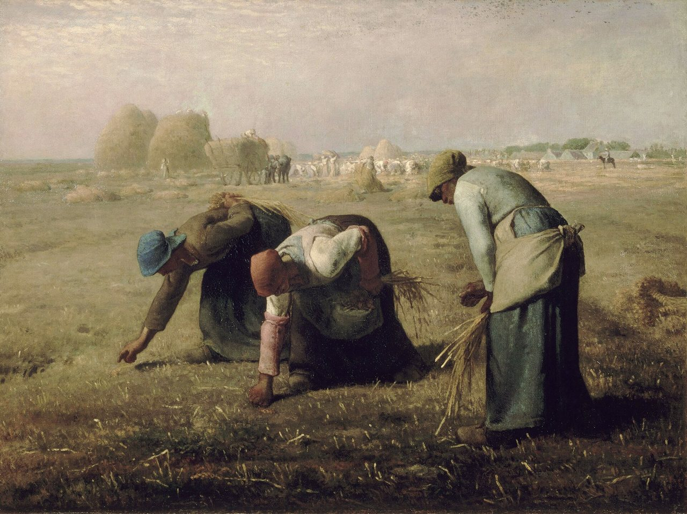

← 藝術101名畫背後的故事 EP16
拾穗
米勒・1857

三個彎腰的女人，讓巴黎上流社會不安。
一個很老的習俗
拾穗，是收割之後，窮人進田裡撿掉落的麥穗。米勒在 1857 年把這個畫面送進巴黎沙龍，畫布有 83.8 × 111.8 公分，這種份量，當時通常留給神話和宗教題材。
有錢人在怕什麼
離 1848 年革命不到十年。上流社會讀到的不是田園詩，而是窮人的人數。有評論家說，他從畫裡看見了「1793 年的斷頭台」。這幅畫展完，只以三千法郎賣出，比米勒的開價還低。
往右邊遠方看
地平線上有個騎馬的人，正在監看收割。金色的麥堆、滿載的馬車都在後方；前景這三個女人，只能撿地上剩下的。今天它掛在巴黎奧塞美術館。
下次看到它，先看這裡
三個拾穗的農婦 前景彎腰撿麥穗，背部弧線彼此呼應
騎馬的監工 右側地平線上，監看收割的人
麥堆與馬車 左後方的豐收，與三個女人無關
作品資料
米勒（Jean-François Millet）
《拾穗》The Gleaners (Des glaneuses)，1857
油彩、畫布 83.8 × 111.8 公分
巴黎 奧塞美術館（Musée d'Orsay）
《拾穗》The Gleaners (Des glaneuses)，1857
油彩、畫布 83.8 × 111.8 公分
巴黎 奧塞美術館（Musée d'Orsay）